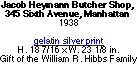

| 2 of 10 |

|
|
Desigining Telexes |
|
|
TELEXES |
In 1979 and 1980, the American Embassy in Teheran, Iran was seized by Islamic fundamentalists and 52 people were held hostage. Gilles Peress traveled Iran for five weeks during the “hostage crisis,” taking pictures to understand a country and a people who were portrayed in the United States media as “fanatics jumping out of the television screen, knife between their teeth, red eyes demanding justice.” (Editors, Telex Iran, 1983)
This photo shows the confusion. The composition is neatly divided into four equal parts. Figures move in and out of the four squares and back and forth creating dizzy shifts in scale. Equally unsettling is the tilted horizon and the head in the lower foreground whose chin, lopped off by the camera, seems to reappear in a sign overhead. Cornell Capa, a fellow photographer and journalist, wrote that Peress’ photos of Iran were “brilliant visual nervousness… aspirins will not help.” (Cornell Capa, Telex Iran, 1983)
This photo was the cover image for a book Peress assembled of his Iran
pictures titled Telex Iran. Peress put the pictures in a sequence
that made the most sense to him, included text that didn’t detract
from the pictures, and designed the overall look and feel of the book.
Instead of captions, the pictures are punctuated by telexes that make
up a parallel story of communications to and from Peress (in Iran) with
lab technicians and his Magnum photography agency offices in New York
and Paris.
| 2 of 10 |